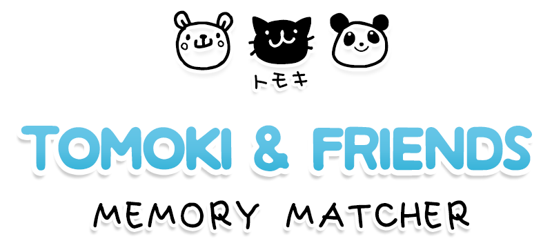
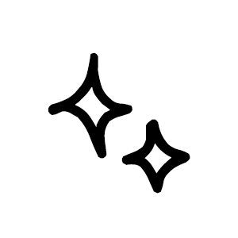
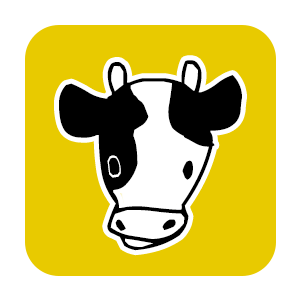
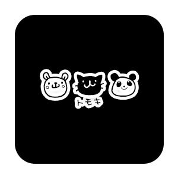
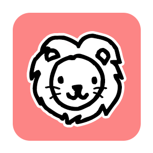
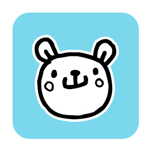

Home
About
Contact


 


Click on each card to uncover what's behind it.
Remember where you saw each friend's picture.
Find and match Tomoki's friends with the same card.
Click and match until you find all of Tomoki's friends.
Enjoy the game!